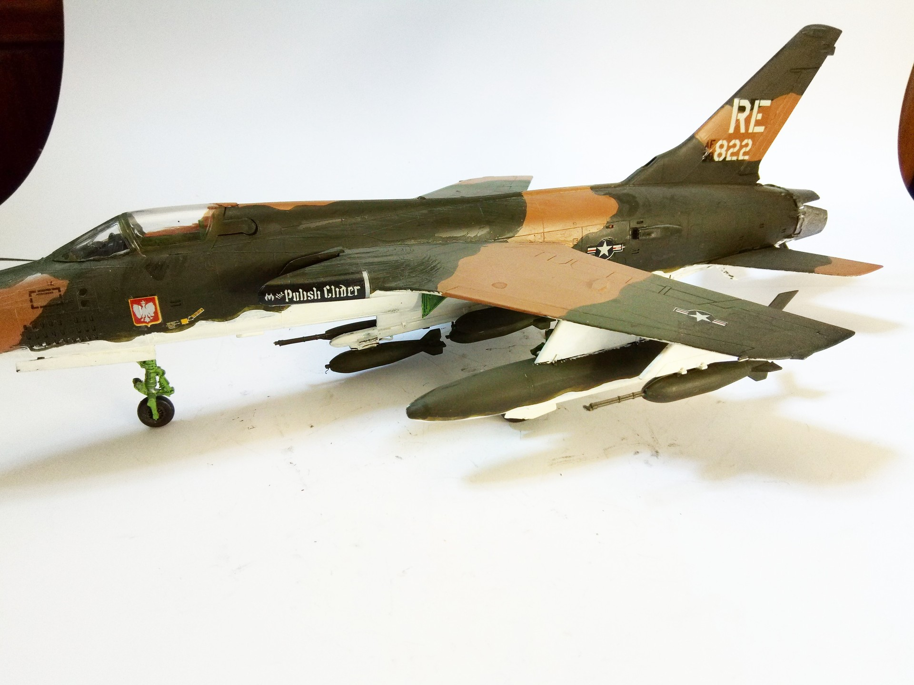
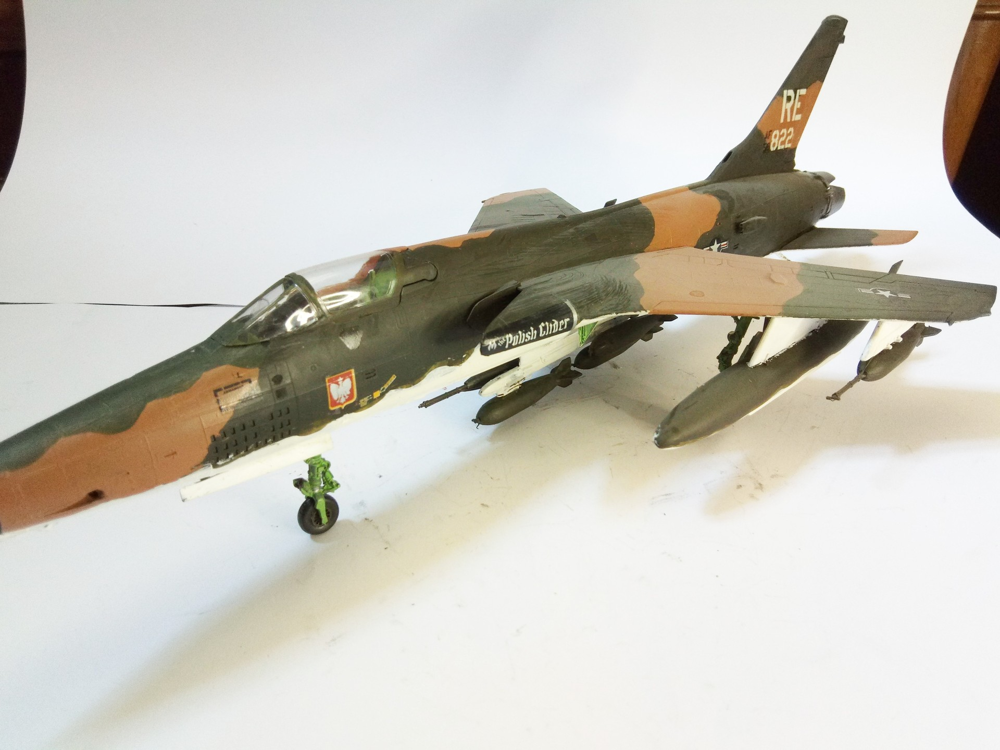

Aerei · scale model archive
Republic F105 D Thunderchief
Republic F105 D Thunderchief — Kit: Monogram, Scale: 1/48. 44 TFS, 355 TFW 59-1822 Polish Glider (Maj.Donald Kutyna) 1970 - Takhli Royal Thai AB #1/48…

Photo gallery

English description
44 TFS, 355 TFW 59-1822 Polish Glider (Maj.Donald Kutyna) 1970 - Takhli Royal Thai AB
#1/48 #Monogram #plasticmodel
Descrizione italiana
44 TFS, 355 TFW 59-1822 Polish Glider (Maj.Donald Kutyna) 1970 - Takhli Royal Thai AB.